Soru 1Cevap: E
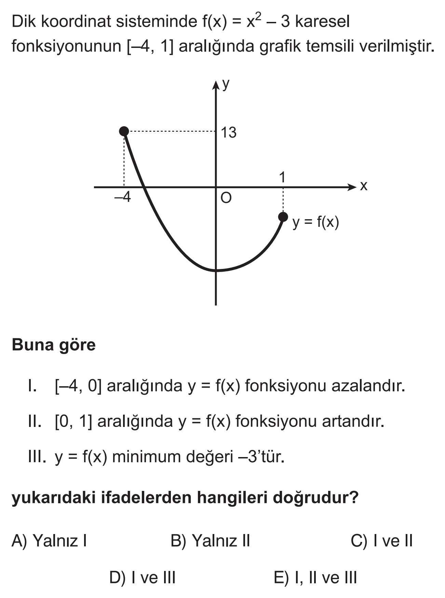
Çözüm
- $x^2-3$'ün tepe noktası $(0,-3)$, kollar yukarı.
- Tepeye kadar ($[-4,0]$) azalan, sonra ($[0,1]$) artan: I ve II doğru.
- En küçük değer tepe noktasında $-3$: III doğru. Cevap E.
Cevap: E
Soru 2Cevap: E
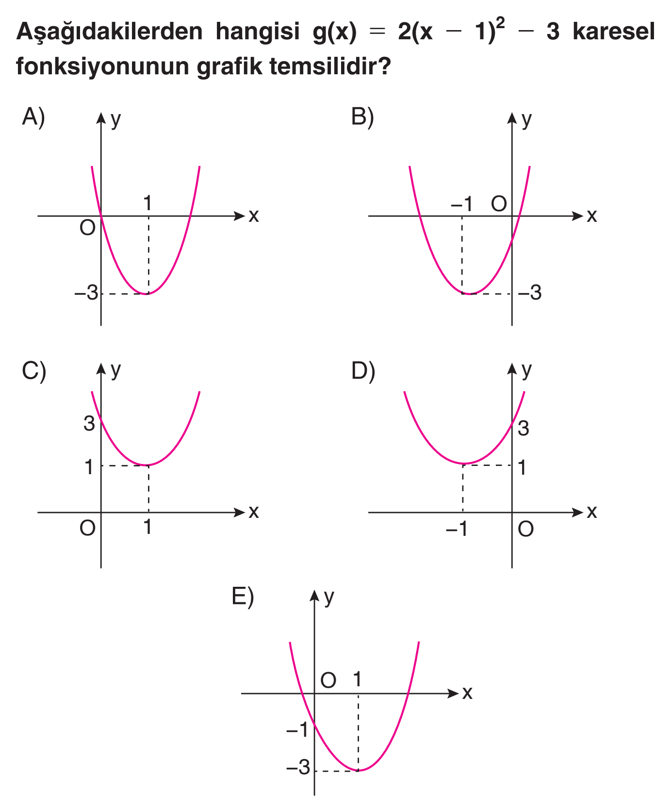
Çözüm
- $2(x-1)^2-3$: tepe $(1,-3)$, kollar yukarı.
- $y$ eksenini kestiği nokta $g(0)=2-3=-1$.
- Tepe $(1,-3)$ ve $(0,-1)$'den geçen grafik E.
Cevap: E
Soru 3Cevap: A
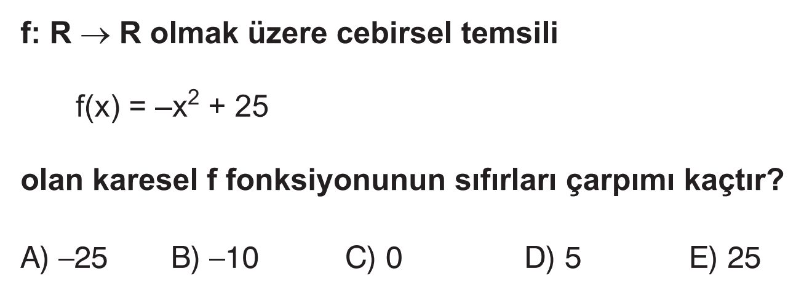
Çözüm
- $-x^2+25=0\Rightarrow x^2=25$.
- Sıfırlar $-5$ ve $5$.
- Çarpım $-25$ (A).
Cevap: A
Soru 4Cevap: C
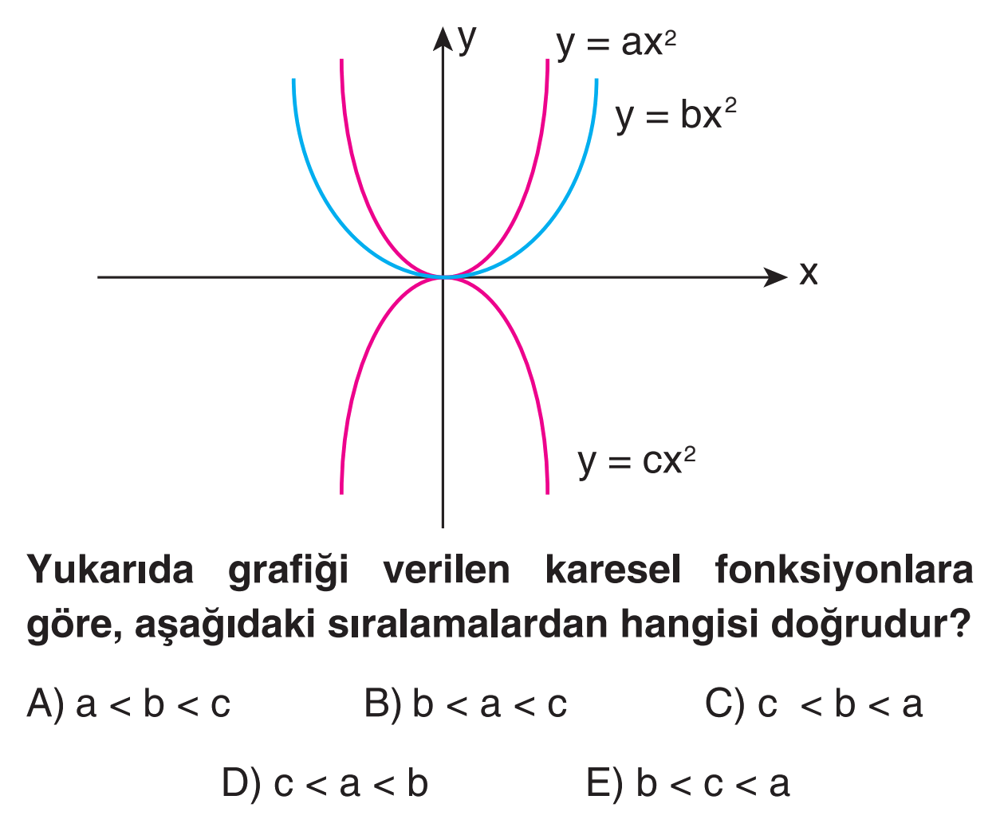
Çözüm
- $cx^2$'nin kolları aşağı: $c\lt0$.
- $ax^2$ ve $bx^2$ yukarı açık; daha dar olan $ax^2$: $a\gt b\gt0$.
- Sıralama $c\lt b\lt a$ (C).
Cevap: C
Soru 5Cevap: B
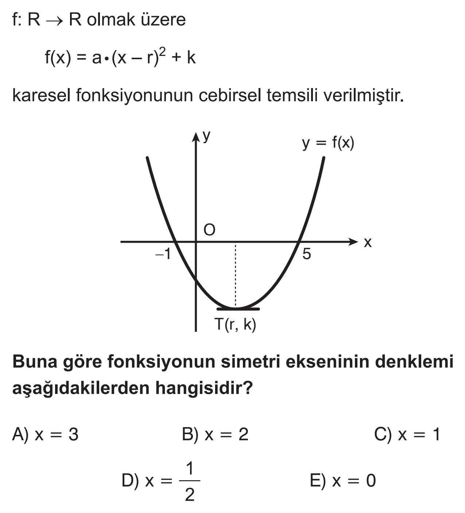
Çözüm
- Simetri ekseni iki sıfırın tam ortasından geçer.
- Sıfırlar $-1$ ve $5$: orta nokta $\dfrac{-1+5}2=2$.
- Simetri ekseni $x=2$ (B).
Cevap: B
Soru 6Cevap: A
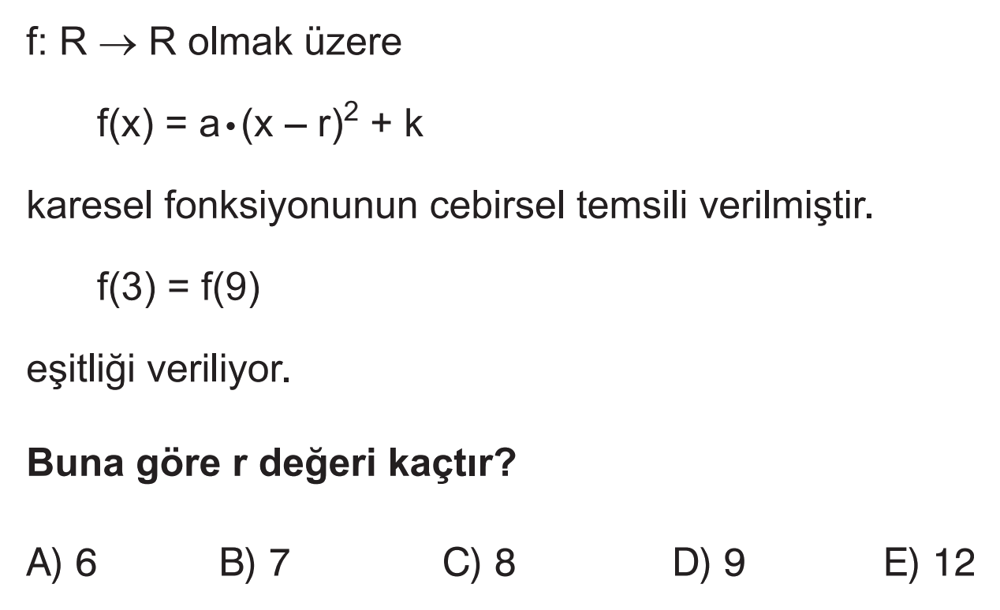
Çözüm
- $f(3)=f(9)$: $3$ ve $9$ simetri eksenine eşit uzaklıkta.
- Simetri ekseni $x=\dfrac{3+9}2=6$.
- Tepe apsisi $r=6$ (A).
Cevap: A
Soru 7Cevap: A
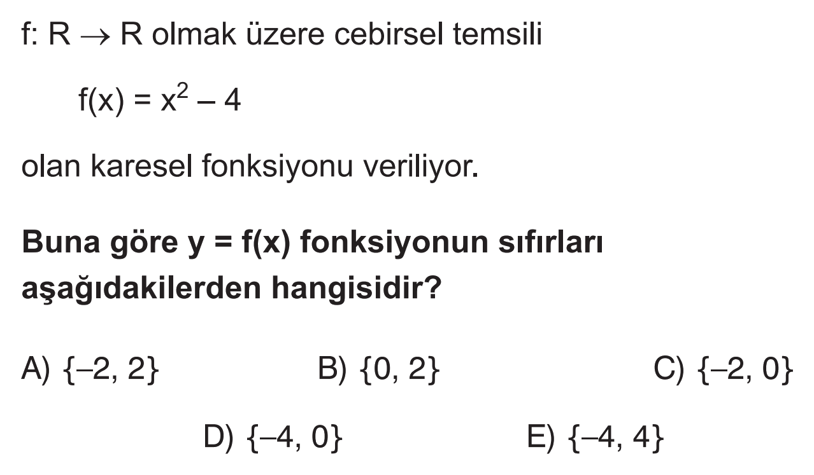
Çözüm
- $x^2-4=0$.
- $x^2=4\Rightarrow x=\pm2$.
- Sıfırlar $\{-2,2\}$ (A).
Cevap: A
Soru 8Cevap: D
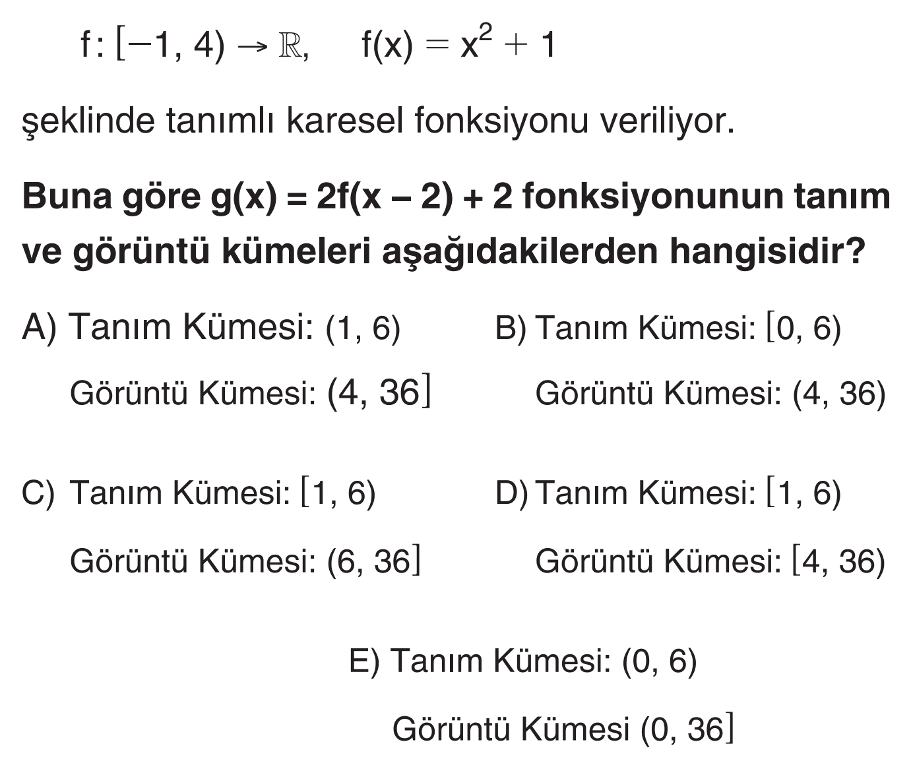
Çözüm
- $x-2\in[-1,4)\Rightarrow x\in[1,6)$: tanım kümesi $[1,6)$.
- $[-1,4)$'te $f(x)=x^2+1$ değerleri $[1,17)$.
- $g=2f+2\in[4,36)$: D.
Cevap: D
Soru 9Cevap: A
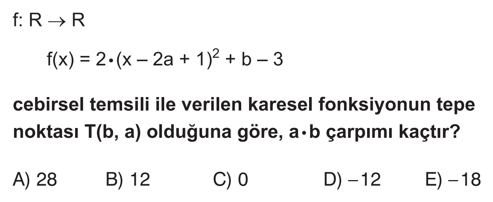
Çözüm
- $2(x-(2a-1))^2+b-3$'ün tepe noktası $(2a-1,\ b-3)$.
- $T(b,a)$: $2a-1=b$ ve $b-3=a\Rightarrow a=4$, $b=7$.
- $a\cdot b=28$ (A).
Cevap: A
Soru 10Cevap: C
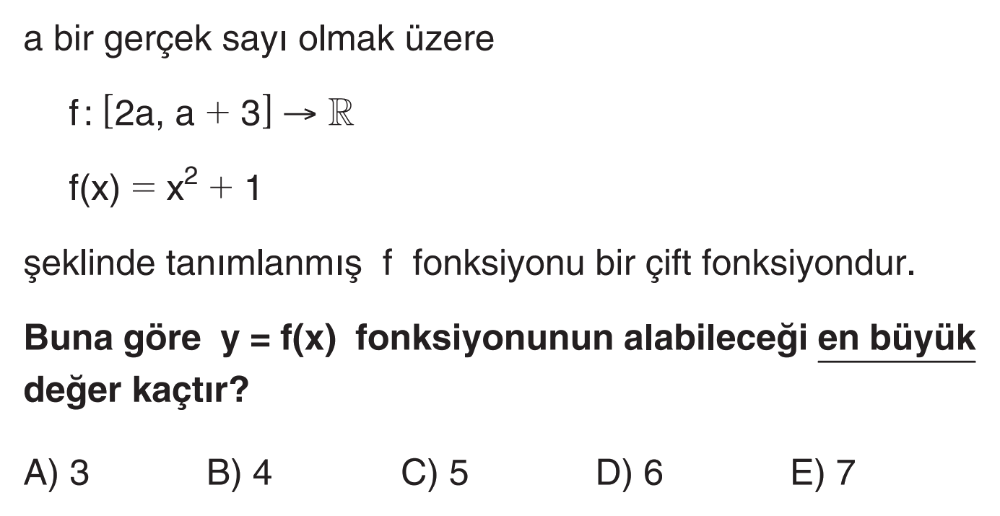
Çözüm
- Çift olması için tanım kümesi $0$'a göre simetrik: $2a+a+3=0\Rightarrow a=-1$.
- Tanım kümesi $[-2,2]$.
- En büyük değer $f(\pm2)=5$ (C).
Cevap: C
Soru 11Cevap: D
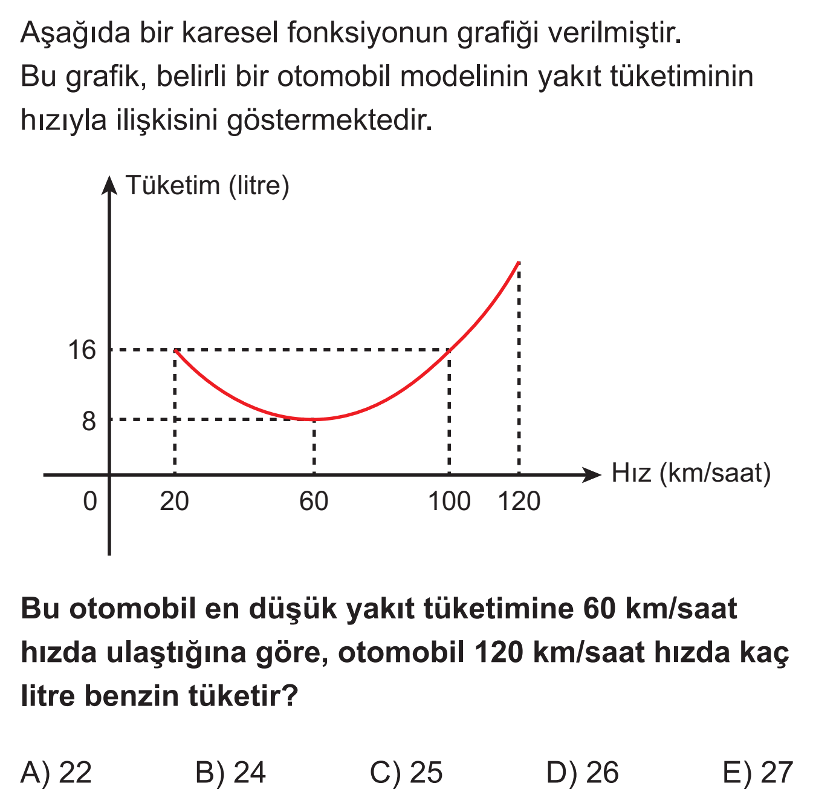
Çözüm
- Tepe $(60,8)$: $f(x)=a(x-60)^2+8$.
- $f(20)=16\Rightarrow 1600a=8\Rightarrow a=\dfrac1{200}$.
- $f(120)=\dfrac{3600}{200}+8=26$ (D).
Cevap: D
Soru 12Cevap: E
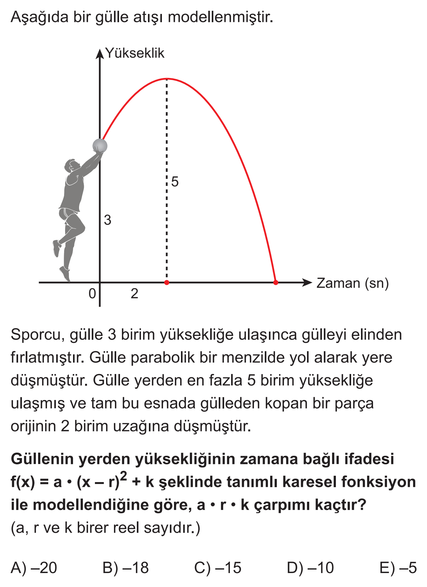
Çözüm
- En yüksek nokta $2$. saniyede $5$ birim: $r=2$, $k=5$.
- $f(0)=3\Rightarrow a\cdot4+5=3\Rightarrow a=-\dfrac12$.
- $a\cdot r\cdot k=-\dfrac12\cdot2\cdot5=-5$ (E).
Cevap: E
Soru 13Cevap: A
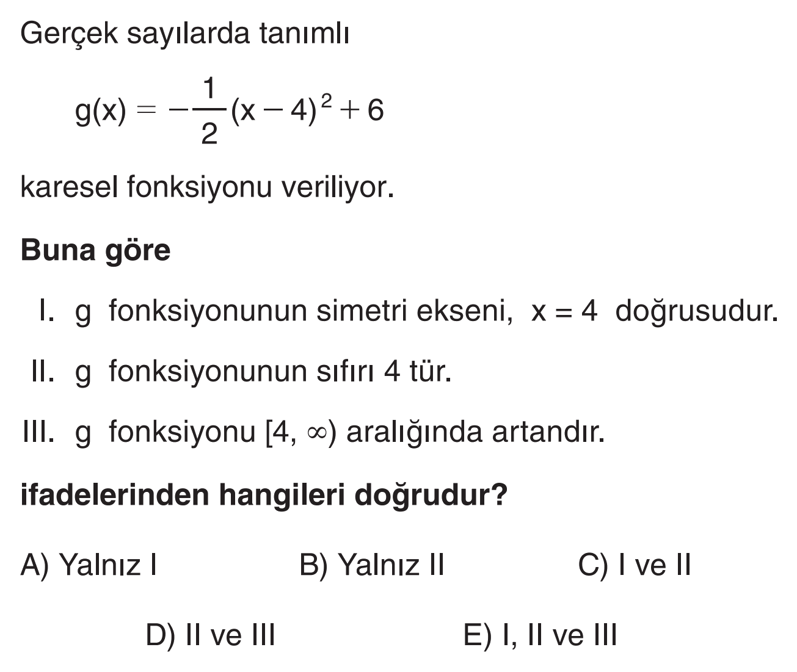
Çözüm
- Tepe $(4,6)$: simetri ekseni $x=4$ (I doğru).
- $g(4)=6\ne0$: $4$ sıfır değil (II yanlış).
- $a=-\dfrac12\lt0$: tepeden sonra, $[4,\infty)$'da azalan (III yanlış). Cevap A.
Cevap: A
Soru 14Cevap: D
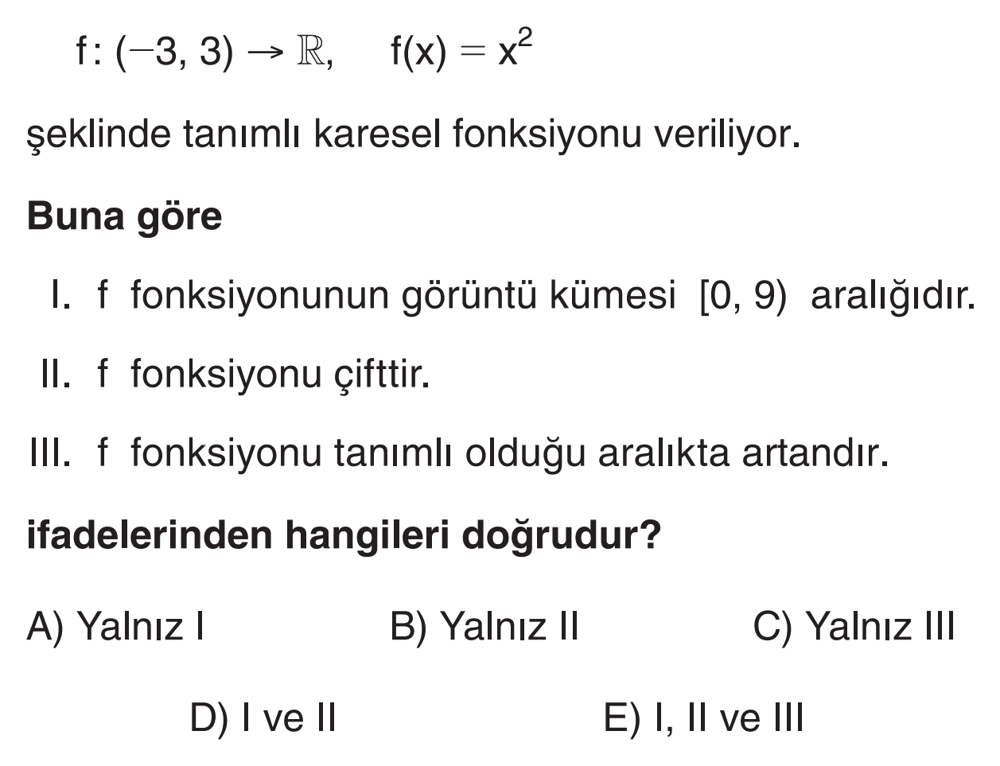
Çözüm
- $(-3,3)$ açık aralıkta $x^2$ en küçük $0$ değerini alır, $9$'a ulaşmaz: görüntü $[0,9)$ (I doğru).
- Tanım kümesi $0$'a göre simetrik ve $(-x)^2=x^2$: çift (II doğru).
- $(-3,0]$'da azalan olduğundan tanım kümesinin tamamında artan değil (III yanlış). Cevap D.
Cevap: D
Soru 15Cevap: D
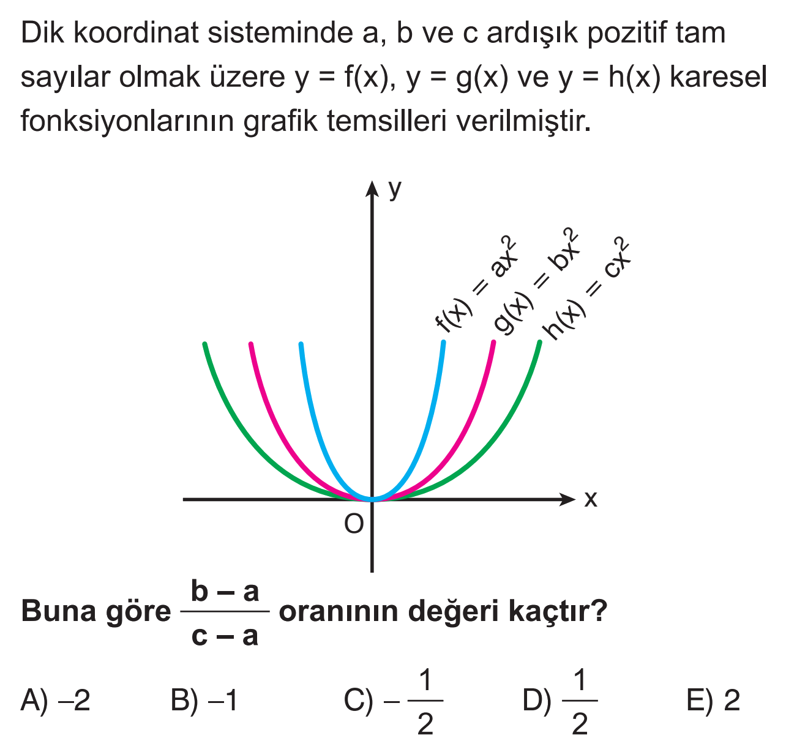
Çözüm
- Pozitif katsayıda katsayı büyüdükçe kollar daralır.
- En geniş $f$, sonra $g$, en dar $h$: $a\lt b\lt c$.
- Ardışık oldukları için $b-a=1$, $c-a=2$; oran $\dfrac12$ (D).
Cevap: D
Soru 16Cevap: D
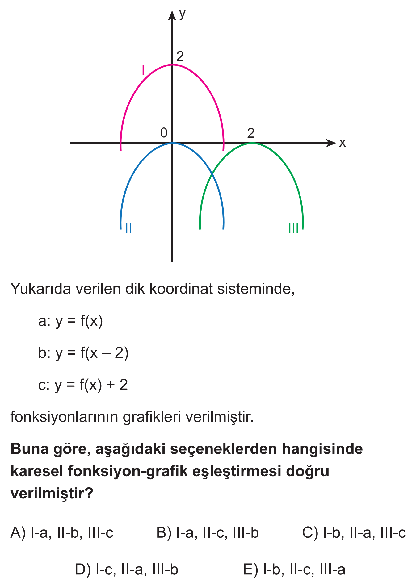
Çözüm
- $f(x)+2$: $f$'nin grafiği 2 birim yukarı; tepe $(0,2)$ olan pembe I.
- $f(x-2)$: 2 birim sağa; tepe $(2,0)$ olan yeşil III.
- Kalan mavi II, $f$'nin kendisi: I-c, II-a, III-b (D).
Cevap: D
Soru 17Cevap: E
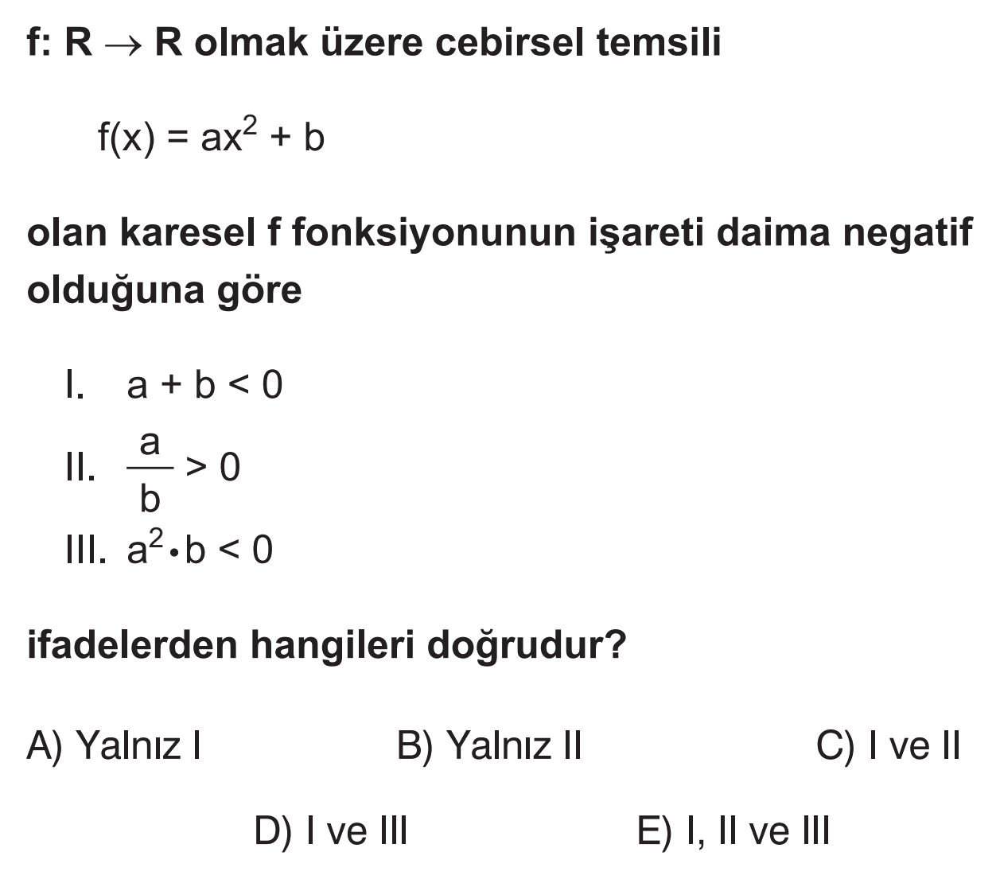
Çözüm
- $ax^2+b$ her $x$ için negatifse kollar aşağı ($a\lt0$) ve en büyük değer $f(0)=b\lt0$.
- $a+b\lt0$ ve $\dfrac ab\gt0$ (iki negatifin bölümü).
- $a^2\gt0$, $b\lt0\Rightarrow a^2b\lt0$. Üçü de doğru (E).
Cevap: E
Soru 18Cevap: D
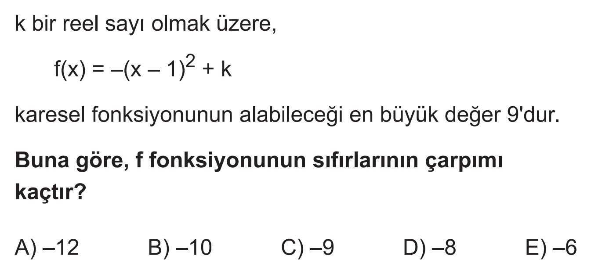
Çözüm
- $-(x-1)^2+k$'nın en büyük değeri $k=9$.
- $-(x-1)^2+9=0\Rightarrow (x-1)^2=9\Rightarrow x=4$ ya da $x=-2$.
- Sıfırların çarpımı $-8$ (D).
Cevap: D
Soru 19Cevap: E
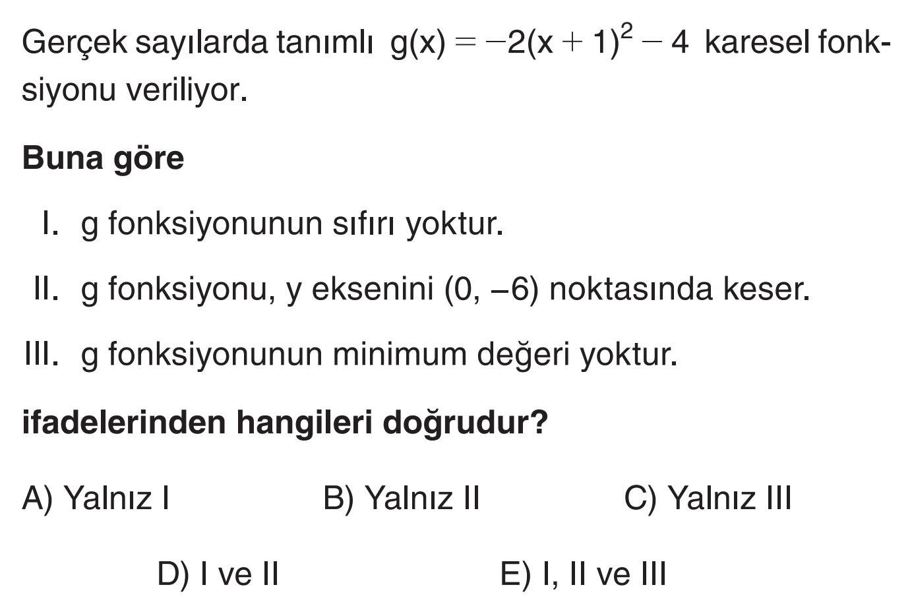
Çözüm
- $g(x)=-2(x+1)^2-4\le-4\lt0$: sıfırı yok (I).
- $g(0)=-2-4=-6$ (II).
- Kollar aşağı, aşağıya sınırsız: minimum yok (III). Cevap E.
Cevap: E
Soru 20Cevap: D
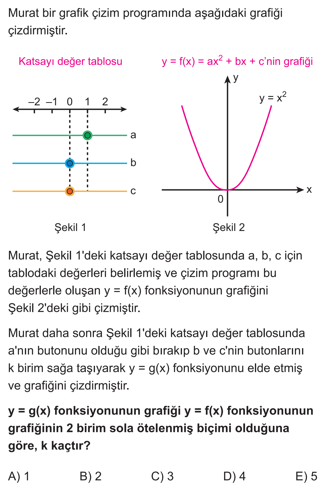
Çözüm
- Şekil 1'de $a=1$, $b=0$, $c=0$: $f(x)=x^2$.
- $b$ ve $c$ butonları $k$ birim sağa: $g(x)=x^2+kx+k$.
- $g(x)=f(x+2)=x^2+4x+4$ olmalı: $k=4$ (D).
Cevap: D
Soru 21Cevap: E
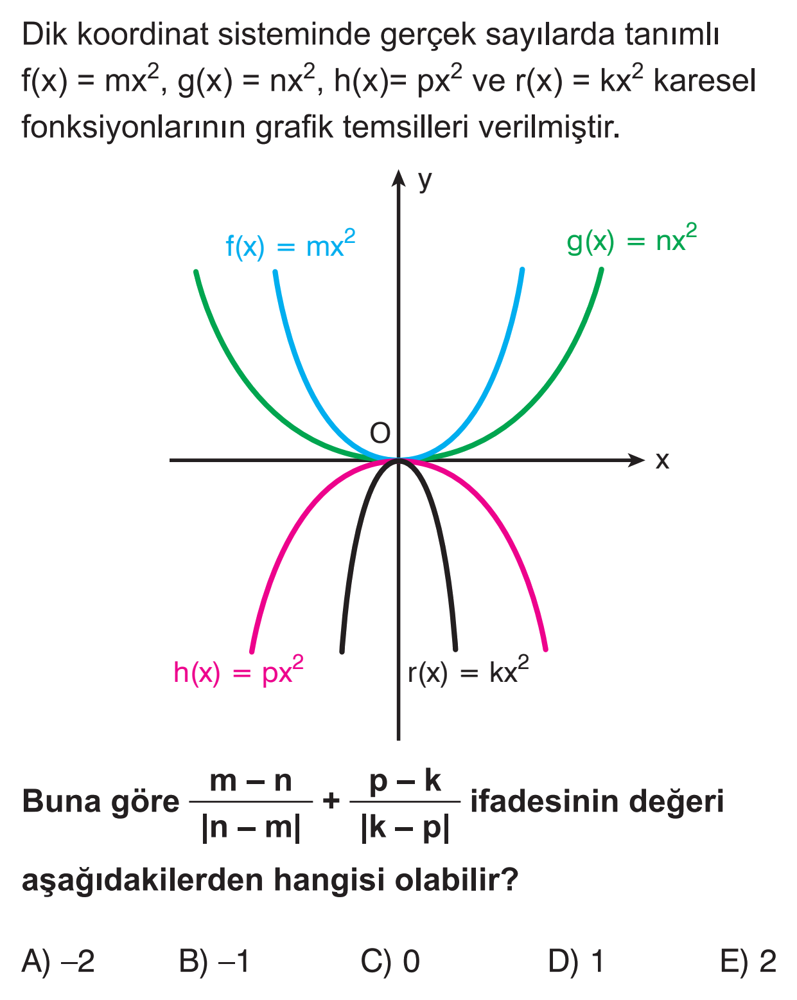
Çözüm
- Yukarı açık olanlar: $m,n\gt0$; daha dar olan $f$: $m\gt n$. Aşağı açıklar: $p,k\lt0$; daha dar olan $r$: $|k|\gt|p|$, yani $k\lt p$.
- $\dfrac{m-n}{|n-m|}=1$ (çünkü $m-n\gt0$).
- $\dfrac{p-k}{|k-p|}=1$ (çünkü $p-k\gt0$). Toplam $2$ (E).
Cevap: E
Soru 22Cevap: C
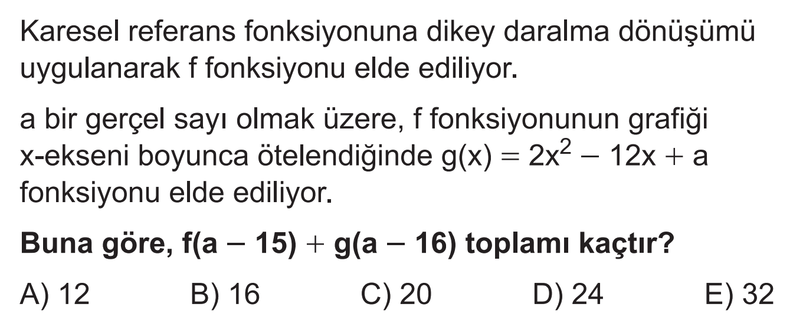
Çözüm
- $f(x)=kx^2$, $g(x)=f(x-r)=k(x-r)^2$.
- $2x^2-12x+a=2(x-3)^2+a-18$: $k=2$, $r=3$ ve $a-18=0\Rightarrow a=18$.
- $f(3)+g(2)=2\cdot9+2\cdot1=20$ (C).
Cevap: C
Soru 23Cevap: D
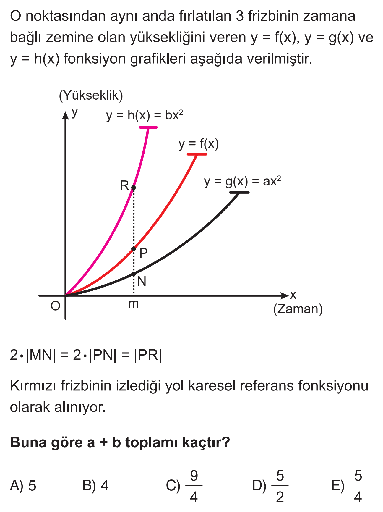
Çözüm
- $x=m$'de $|MN|=am^2$, $|PN|=m^2-am^2$, $|PR|=bm^2-m^2$.
- $2|MN|=2|PN|\Rightarrow a=1-a\Rightarrow a=\dfrac12$.
- $|PR|=2|PN|\Rightarrow b-1=1\Rightarrow b=2$; $a+b=\dfrac52$ (D).
Cevap: D
Soru 24Cevap: C
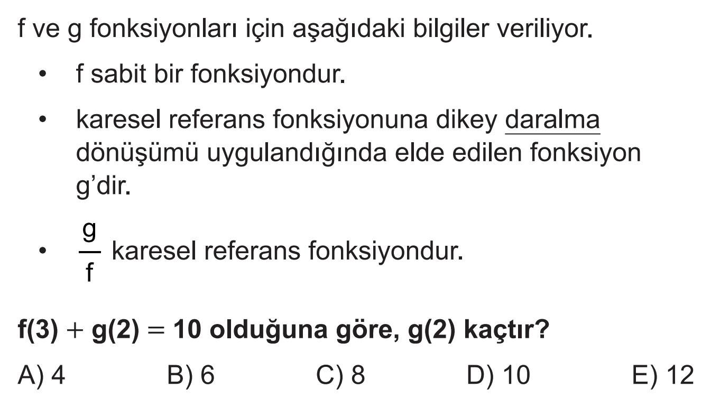
Çözüm
- $f(x)=c$ (sabit), $g(x)=kx^2$ ($0\lt k\lt1$).
- $\dfrac gf=\dfrac{kx^2}c=x^2\Rightarrow k=c$.
- $f(3)+g(2)=c+4c=10\Rightarrow c=2$; $g(2)=4\cdot2=8$ (C).
Cevap: C